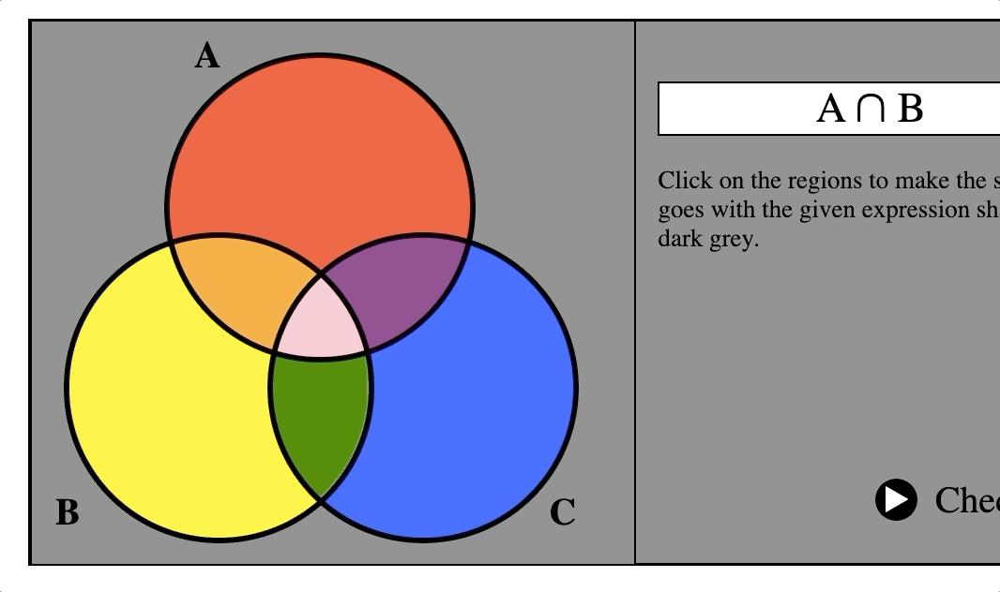
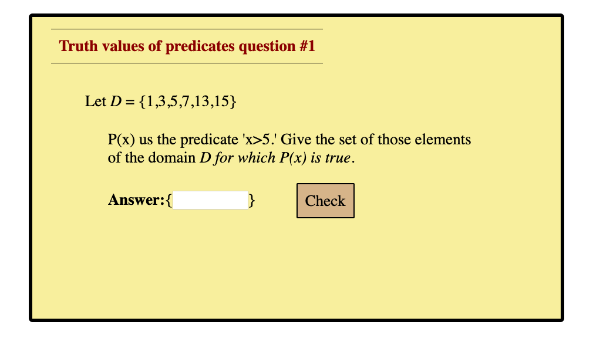
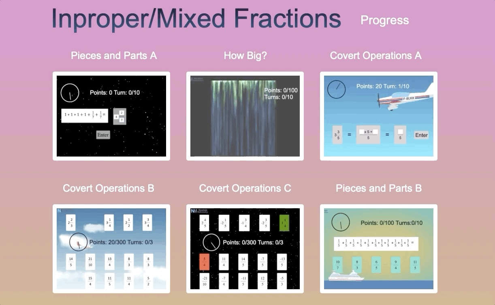
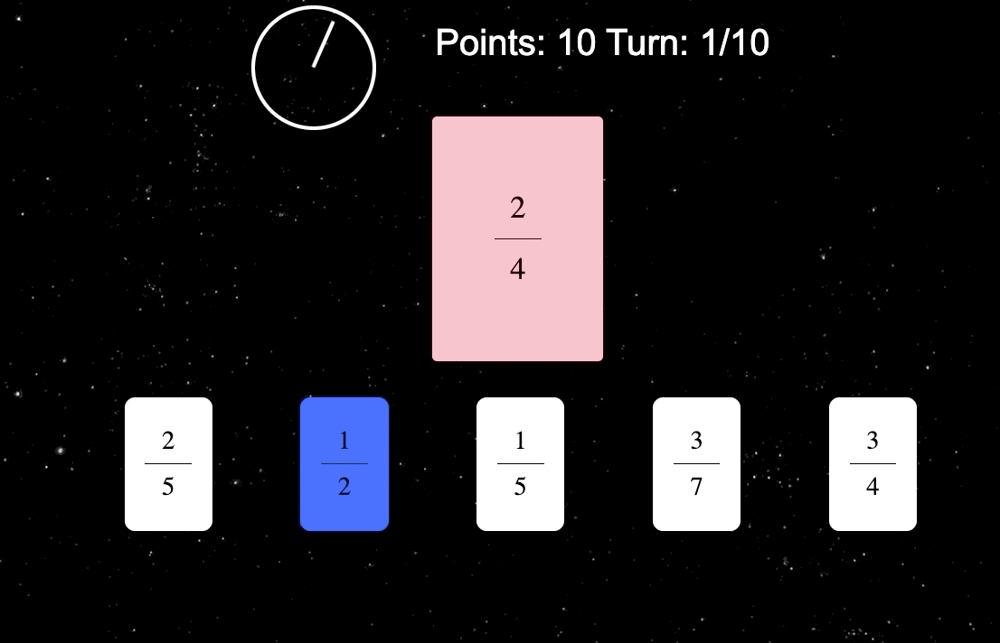

The Pai Lab's focus is on Pharmacokinetic (PK) modeling, and I undertake a wide range of coding tasks to help the lab function/achieve its goals. One of my main duties is data organization and then subsequently using modeling software to see if meaningful trends can be extracted from the data. Using Python (primarily the pandas library), R, and MS Excel I organize data containing thousands of patients' information queried from the hospital's database. I then run modeling simulations on the cleaned data using the modeling software Monolix and Pmetrics. After doing this process a bit, I wrote programs in Python and R to streamline it, including Python scripts to extract, organize, and present information from batches of model .txt files produced from the Monolix runs, as well as R scripts to run a list of predetermined models/conditions in Pmetrics, an R package, and Monolix using the Monolix R API. I also occasionally perform non-coding research tasks such as editing papers, checking references, making figures, etc.
In addition to my data organization/modeling role, I also have made mobile/desktop applications simulating dosing regimens for undergraduate/graduate level education. These apps were made using the Shiny R package. Learning how to effectively use Shiny as well as ggplot in R have greatly enhanced my appreciation for the language. While at the end of the day I still prefer Python, R's abilities from the data visualization side are exquisite. I also perform upkeep/modifications on the Pai Lab/College of Pharmacy Website using HTML/CSS/Javascript in the Drupal framework. I must say I am not the biggest fan of Drupal, but have figured it out enough to get the job done.


UMich Math Exercises
A project I am currently undertaking in my spare time is making online math exercises for the University of Michigan math department. The problem sets are designed to help students learn the basic concepts of sets and proof logic. This will be done visually through truth tables, Venn Diagrams, etc. With online learning becoming more and more prominent I hope these exercises will be useful for that medium of education.
This project brought me back to HTML/CSS/JavaScript work, and provided me the opportunity gain more experience in this area.


Neaton Mathematics
Neaton Mathematics is an education startup that aims to make online math educational content for use by individuals ranging from elementary school to college. For my part I designed the lessons/user interface using CSS/HTML/JavaScript. I also helped construct the SQL databases that kept track of students’ progress, and connected them to the user interface using PHP so that student data such as level progress, quiz scores, etc. could be collected, stored, analyzed, and shown to the students and the teachers.
Making the various levels and lessons really helped me to understand how to code in HTML/CSS/JavaScript and how these languages work together. I also got exposure to common Javascript libraries such as JQuery and THREE in the process. While I am still no expert in them, I gained a functional understanding of coding in PHP and SQL, and how the two can be used in conjunction with one another. Finally, I got experience in setting up and hosting dynamic websites.
The Pai Lab's focus is on Pharmacokinetic (PK) modeling, and I undertake a wide range of coding tasks to help the lab function/achieve its goals. One of my main duties is data organization and then subsequently using modeling software to see if meaningful trends can be extracted from the data. Using Python (primarily the pandas library), R, and MS Excel I organize data containing thousands of patients' information queried from the hospital's database. I then run modeling simulations on the cleaned data using the modeling software Monolix and Pmetrics. After doing this process a bit, I wrote programs in Python and R to streamline it, including Python scripts to extract, organize, and present information from batches of model .txt files produced from the Monolix runs, as well as R scripts to run a list of predetermined models/conditions in Pmetrics, an R package, and Monolix using the Monolix R API. I also occasionally perform non-coding research tasks such as editing papers, checking references, making figures, etc.
In addition to my data organization/modeling role, I also have made mobile/desktop applications simulating dosing regimens for undergraduate/graduate level education. These apps were made using the Shiny R package. Learning how to effectively use Shiny as well as ggplot in R have greatly enhanced my appreciation for the language. While at the end of the day I still prefer Python, R's abilities from the data visualization side are exquisite. I also perform upkeep/modifications on the Pai Lab/College of Pharmacy Website using HTML/CSS/Javascript in the Drupal framework. I must say I am not the biggest fan of Drupal, but have figured it out enough to get the job done.
UMich Mathematics Exercises
A project I am currently undertaking in my spare time is making online math exercises for the University of Michigan math department. The problem sets are designed to help students learn the basic concepts of sets and proof logic. This will be done visually through truth tables, Venn Diagrams, etc. With online learning becoming more and more prominent I hope these exercises will be useful for that medium of education.
This project brought me back to HTML/CSS/JavaScript work, and provided me the opportunity gain more experience in this area.
Neaton Mathematics
Neaton Mathematics is an education startup that aims to make online math educational content for use by individuals ranging from elementary school to college. For my part I designed the lessons/user interface using CSS/HTML/JavaScript. I also helped construct the SQL databases that kept track of students’ progress, and connected them to the user interface using PHP so that student data such as level progress, quiz scores, etc. could be collected, stored, analyzed, and shown to the students and the teachers.
Making the various levels and lessons really helped me to understand how to code in HTML/CSS/JavaScript and how these languages work together. I also got exposure to common Javascript libraries such as JQuery and THREE in the process. While I am still no expert in them, I gained a functional understanding of coding in PHP and SQL, and how the two can be used in conjunction with one another. Finally, I got experience in setting up and hosting dynamic websites.